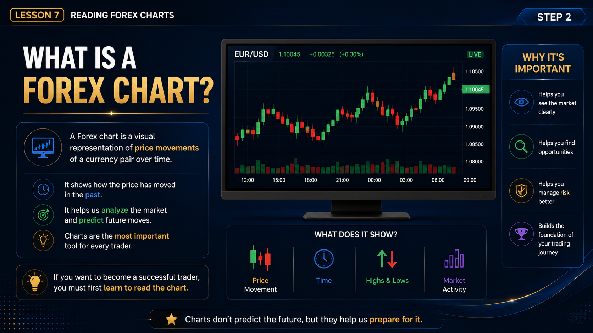
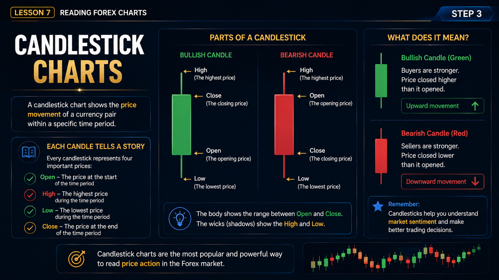
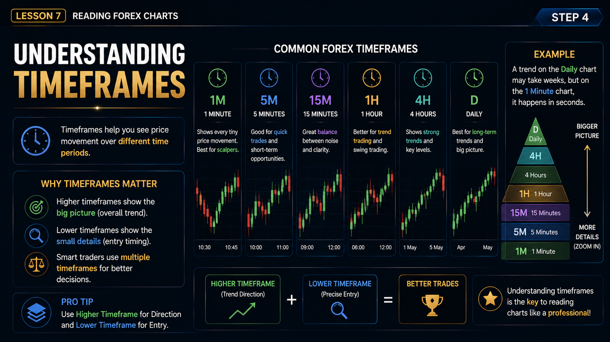
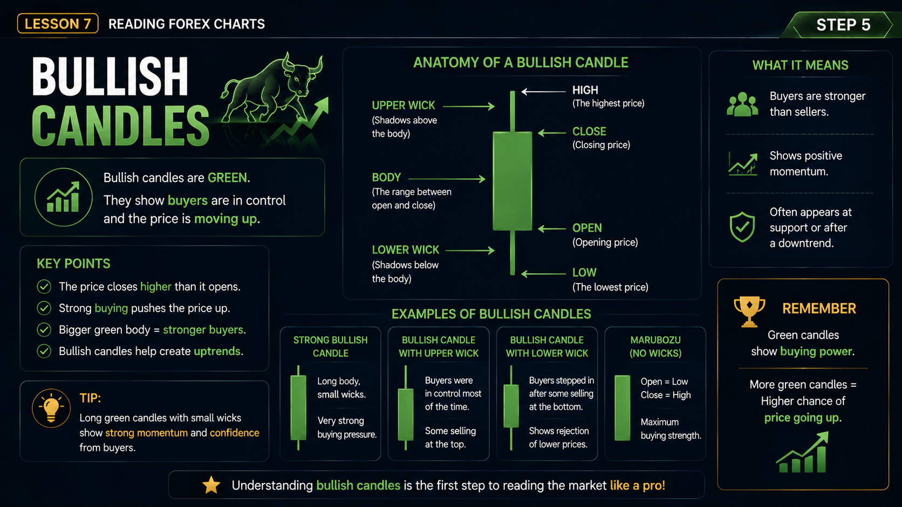
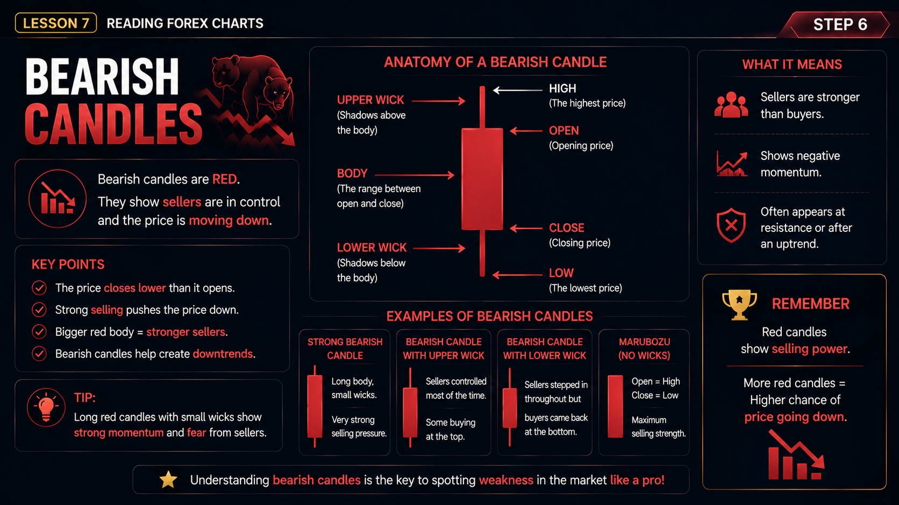
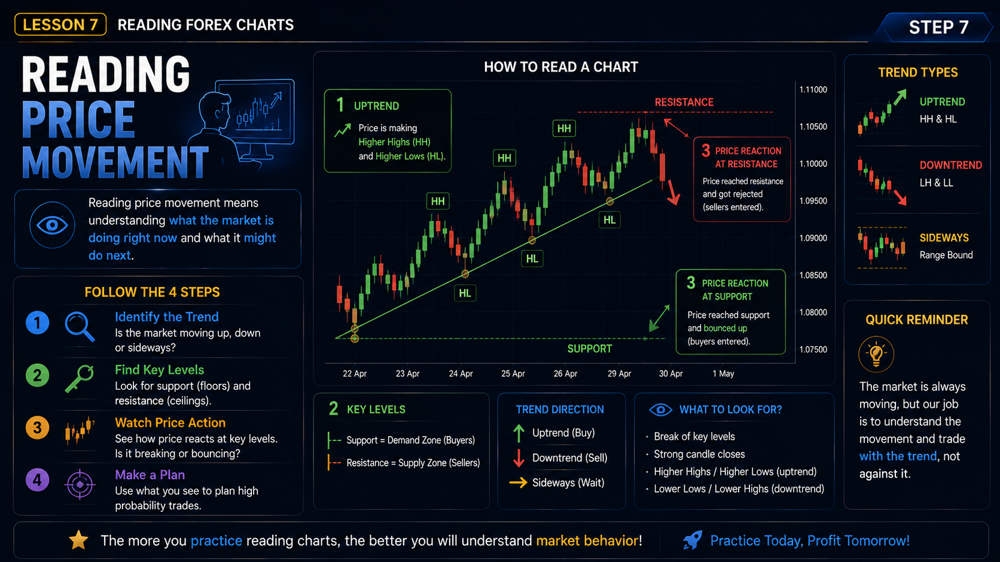
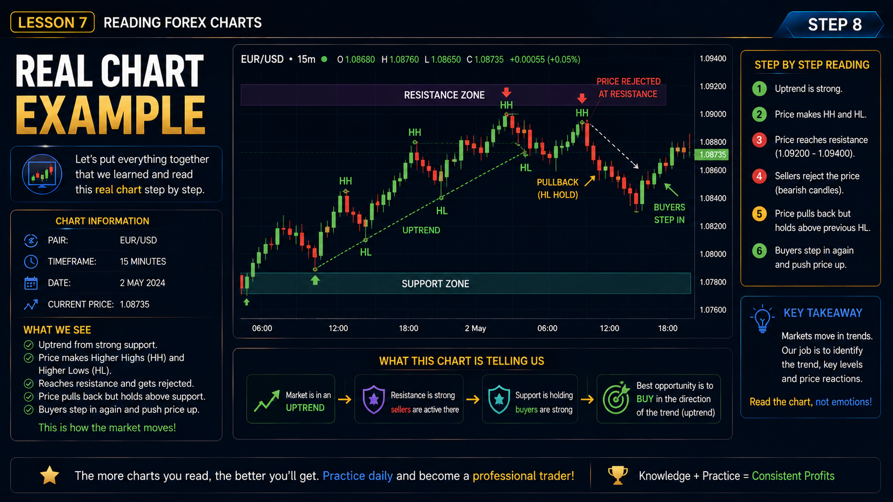
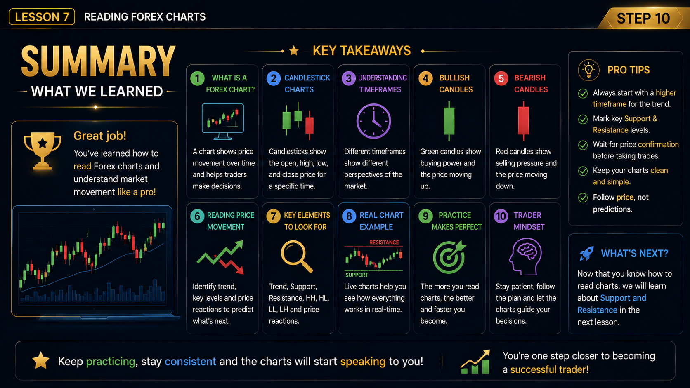

Lesson 7 — Reading Forex Charts
Forex charts visually represent the historical price movements of currency pairs over time. Traders use tools like candlestick charts and different timeframes to analyze past price action and make informed trading decisions.
Step 1 of 10
Welcome to Lesson 7
Reading Forex Charts
Charts are the language of trading. In this lesson, we dive deep into how to read and understand the market through charts, timeframes, and price action.
✅ Lesson Goal
After completing this lesson, you will be able to:
- ✔ Read and interpret Forex charts.
- ✔ Understand the OHLC (Open, High, Low, Close) of a candlestick.
- ✔ Recognize bullish and bearish market structures.
- ✔ Identify basic market trends (HH, HL, LH, LL).
📚 What You Will Learn
- ✔ Understand what a Forex chart is.
- ✔ Read and interpret candlesticks (OHLC).
- ✔ Identify bullish and bearish candles.
- ✔ Understand the market psychology behind different candle shapes.
- ✔ Identify basic trends (Higher Highs, Higher Lows, etc.).
What is a Forex Chart?
Study the infographic below to understand what a Forex chart represents, why it is the most important tool for traders, and how it helps analyze market movements.
There are three main types of charts: Line Charts, Bar Charts, and Candlestick Charts. Throughout this course, we focus exclusively on Candlestick Charts as they are the global industry standard.

💡 Key Takeaway
Charts don't predict the future, but they help us prepare for it by showing price movements, trends, and market history.
Candlestick Charts
Candlestick charts are the industry standard for reading price action. Review the diagram below to see how each part of a candle tells a story.
📘 Key Components (OHLC)
Before we go further, let's explicitly define the four price points that make up every candle:
- Open – The price at the start of the session.
- High – The highest price reached during the session.
- Low – The lowest price reached during the session.
- Close – The price at the end of the session.

📘 Quick Summary
Bullish (Green): Buyers are stronger. Price closed higher.
Bearish (Red): Sellers are stronger. Price closed lower.
Understanding Timeframes
Different timeframes show different perspectives. Higher timeframes show the big picture (trend), while lower timeframes show the small details (entry timing).

🌟 Pro Tip
Use Higher Timeframe for Direction, Lower Timeframe for Entry. Combining multiple timeframes leads to smarter and more accurate trades.
Which of these usually shows the direction of the market over a larger period?
Select an answer to receive immediate feedback.
Bullish Candles
Bullish candles are green. They show that buyers are in control and the price is moving up. However, we must look beyond the color to understand market psychology.
Core Concept: The size of a candle's body tells you the strength of the conviction. A large body is strong; a small body is weak.

📈 The Psychology Behind Bullish Candles
- Large Green Body: Indicates high confidence from buyers. The larger the body, the stronger the conviction. Buyers dominated the entire session.
- Small Green Body: Indicates weak confidence or hesitation. Buyers won, but barely. It shows a lack of strong buying pressure.
- Long Lower Wick: Price fell initially, but buyers aggressively pushed it back up. This indicates buyer rejection of lower prices.
Bearish Candles
Bearish candles are red. They show that sellers are in control and the price is moving down. Understanding the psychology behind the wicks and body is critical.
Core Concept: A small red body does NOT mean strong sellers. Market momentum requires a large body to confirm conviction.

📉 The Psychology Behind Bearish Candles
- Large Red Body: Sellers controlled the entire session. Shows strong selling pressure and panic/fear.
- Long Upper Wick: Price rose initially, but sellers aggressively pushed it back down. This indicates seller rejection of higher prices.
- Small Red Body: A small red candle does not indicate strong sellers. It shows hesitation, weak selling pressure, or a market that is barely moving down.
❌ Common Mistake
Beginners often think: Green candle = Buy now, Red candle = Sell now. This is WRONG. You must always wait for confirmation from the next candle and consider the context (like support and resistance) before trading.
Reading Price Movement
Reading price movement means understanding what the market is doing right now. To do this, we connect candles to identify trends.
- Higher High (HH): Each new peak is higher than the last.
- Higher Low (HL): Each new trough is higher than the last.
- Lower High (LH): Each new peak is lower than the last.
- Lower Low (LL): Each new trough is lower than the last.
- Sideways Market: Price bounces between a high and low range without a clear direction.
When you see a series of HH and HL, the market is in an Uptrend. Conversely, LH and LL indicate a Downtrend. Understanding these terms is vital for Lesson 8.
Important: Trends don't last forever. Always look for confirmation before assuming the trend will continue. Price action can reverse at any time.

💡 Quick Rule
The more you practice reading charts, the better you will understand market behavior.
Real Chart Example
Let's put everything together. Study the real chart example below. Use the checklist to practice identifying key elements.

✅ Interactive Practice Checklist
Look at the chart above and tick off these elements:
🎯 Best Opportunity
When the market is in an uptrend and price pulls back to an area where it previously bounced up, the best opportunity is often to BUY in the direction of the trend. We'll explore the formal rules for this in Lesson 8!
📝 Lesson 7 Quiz
Before you start, let's quickly review what we covered today:
⚡ Quick Revision
- ✔ Forex Chart – The visual record of price.
- ✔ Chart Types – Line, Bar, and Candlestick.
- ✔ OHLC – Open, High, Low, Close.
- ✔ Candlestick – The story of a session.
- ✔ Bullish (Green) – Buyers won the session.
- ✔ Bearish (Red) – Sellers won the session.
- ✔ Timeframes – Higher (Trend) vs Lower (Entry).
- ✔ Price Movement – HH, HL, LH, LL, Sideways.
📌 Golden Rule
One candle never tells the whole story. Always wait for confirmation from the next candle before making a trading decision.
Answer all 10 questions. Aim for at least 70% to pass the Lesson 7 mastery target and prepare for Lesson 8.
Loading Question...
🎉 Congratulations!
You have successfully completed Lesson 7 – Reading Forex Charts. Review the summary below to solidify what you've learned.

🏆 What You Learned
- ✔ What a Forex chart is and its importance.
- ✔ How to read candlesticks (OHLC).
- ✔ The importance of different timeframes.
- ✔ Bullish and Bearish candle psychology (body & wicks).
- ✔ How to identify trends using HH, HL, LH, LL, and Sideways.
- ✔ How to analyze real charts.
🚀 What's Next?
Lesson 8: Support & Resistance
Now that you understand how candles tell a story, it's time to learn where the price is likely to react. In the next lesson, you will master:
- 🔹 Support & Resistance Zones
- 🔹 How price Bounces off these levels.
- 🔹 How price Breaks out through them.
- 🔹 How to spot a Fake Breakout.
"The market rewards preparation, not prediction."
— Strativo Academy